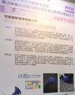

台大技術發表
1972年(民國61年)專營於醫院、辦公大樓、高速道路等清潔。
1973年(民國62年) 台灣通霄火力發電廠發電機組保養清潔。
1976年(民國65年) 全台首創始用國外樹脂地板臘施工法、自動洗地機。
1977年(民國66年) 創立元年，代表作中正紀念堂景觀。
2003年02月 榮獲行政院勞委會無塵菌事業技術專案輔導。
2003年05月 引進日本光觸媒技術協議會，日本抗菌製品協會，及光機能材料研究會等技術，提升防制院內感染技術。
2003年10月 取得ISO 9001認證。
2006年10月 成立世屋國際環境有限公司。
2006年11月 上海工業博覽會，受日本產官學方邀請，協助光觸媒技術應用華語說明。
2010年1月 世屋國際環境有限公司空氣品質改善與室內照明工程開展。
2011年7月 榮獲台北市政府 創新研發案通過。
2012年4月 台灣大學附設醫院國際廳創新研發案成果發表。
2015年11月 室內空氣品質改善，空調清淨模組設計業務開展。
2016年11月 京東網，雙11，由我司設計空氣清淨機上線開賣。
2017年11月 銀川創新設計，本公司創新技術決賽優勝獎。
2018年1月 北美品牌消毒器，由本公司共同設計。
2019年4月 中國(上海)環境博覽會 環境治理 評審
2019.10月 空氣清淨技術榮獲英國倫敦發明展雙金牌獎。
2020.1月 抗菌醫材研發開展及新冠(CoV19)肺炎防治產品開發。
2022.1月 新冠(CoV19)肺炎防治產品販售。
2025.1月 日本自動車清淨模組代工。
經 營 理 念
替客戶創造舒適的生活空間及產品，創造客戶之價值。